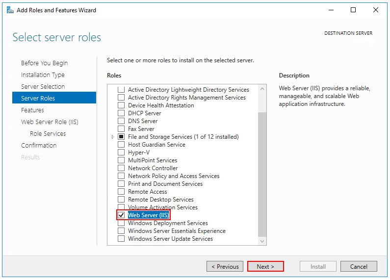
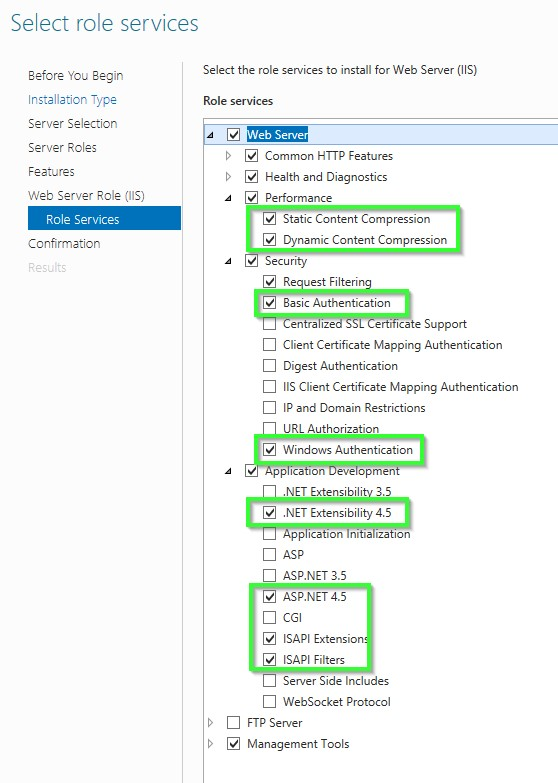
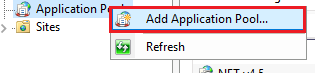
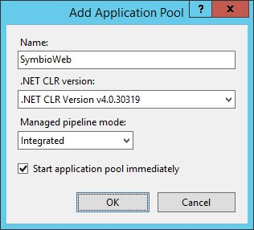
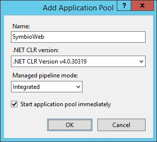
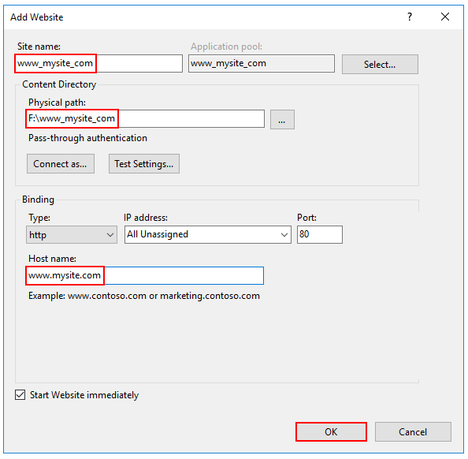

Installation of the Internet Information Services (IIS)
Enable the Web Server (IIS) role and establish role services.
- Windows Server
Windows desktop operating systems
Navigate to Control Panel > Programs > Programs and Features > Turn Windows features on or off (left side of the screen). Open the group for Internet Information Services and Web Management Tools. Check the box for IIS Management Console. Check the box for World Wide Web Services. Accept the default features for World Wide Web Services or customize the IIS features to suit your needs.

Windows Server operating systems
For server operating systems, use the Add Roles and Features wizard via the Manage menu or the link in Server Manager. On the Server Roles step, check the box for Web Server (IIS).

On the Role services step, select the IIS role services you desire or accept the default role services provided.

Proceed through the Confirmation step to install the web server role and services. A server/IIS restart is not required after installing the Web Server (IIS) role.
Create the IIS Website
- Start the Internet Information Server (IIS)
This is how you start IIS-Manager in the dialogue field "Execute"
- On the Start menu, click All Programs , click Accessories , and then click Run.
- In the Open box, type inetmgr and then click OK
This is how you start IIS-Manager from the Administrative Services console
- On the Start menu, click All Programs , click Accessories , and then click Run.
- In the Run text box, type control panel , and then click OK.
- In the Control Panel window, click Classic View , and then double-click Administrative Tools.
- In the Administrative Tools window, double-click Internet Information Services.
This is how you create an application pool on a web server
- In the Connections pane please expand the server name and click on application pools.
- On the page Application pools please click on Add application pool in the Actions
In the dialogue field Add application pool please enter a unique name for the application pool in the field Name. Or right click on the area and select the option 'Add Application Pool...'

A new dialog opens. Maintain the following values.
- In the List .NET Framework-Version please select the following .NET Framework version: NET CLR Version v4.0.x
- From the list Managed pipeline mode please select the Integrated , if you want to use the pipeline integrated in IIS und ASP.NET. Select No Managed Code if you install an Microservice for Symbio. ASP.NET Core runs in a separate process and manages the runtime.
Please select Start application pool immediately to start the application pool whenever the www service is started. This option is activated by default.
Click on OK.
 

This is how you add a website
In the Connections pane please right-click the node Sites in the tree and then click on Add** Web Site**. Or right click on the area and select the option 'Add Website'.

In the dialogue field Add** Web Site** please enter a name for the website in the Website name box.
- Click on In the dialogue field Select application pool please select the application pool which you have created in the previous section and then click on OK.
- In the field Physical path please type the physical path of the Web site's folder, or click the browse button ( ... ) to navigate the file system to find the folder.
- If the physical path that you entered is to a remote share, click Connect as to specify credentials that have permission to access the path. If you do not use specific credentials, select the Application user (pass-through authentication) option in the Connect As dialog box.
- Select the protocol for the Web site from the Type list.
- The default value in the IP address box is All Unassigned. If you must specify a static IP address for the Web site, type the IP address in the IP address box.
- Type a port number in the Port text box.
- Optionally, type a host header name for the Web site in the Host Header box.
- If you do not have to make any changes to the site, and you want the Web site to be immediately available, select the Start Web site immediately check box.
Click OK.

Recommendation
Create for each environment (Test and Prod) a website.